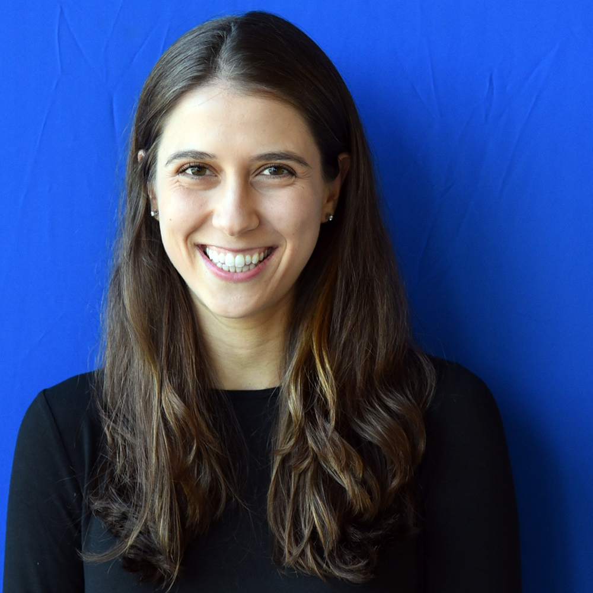

Rebecca (Peyser) Boiarskyrboiar [at] mit [dot] edu
Hello! I'm a 3rd year PhD student in EECS at MIT,
co-advised by David Sontag in MIT CSAIL and Gaddy Getz at the Broad Institute.
|
 |
Single Cell Characterization of Myeloma and its Precursor Conditions Reveals Transcriptional Signatures of Early Tumorigenesis
, Nicholas J. Haradhvala, Jean-Baptiste Alberge, Romanos Sklavenitis-Pistofidis, Tarek H. Mouhieddine, Oksana Zavidij, Ming-Chieh Shih, Danielle Firer, Mendy Miller, Habib El-Khoury, Shankara K. Anand, François Aguet, David Sontag, Irene M. Ghobrial, and Gad Getz
medRxiv, 2022
Deep Contextual Clinical Prediction with Reverse Distillation
Rohan S Kodialam, , Justin Lim, Neil Dixit, Aditya Sai, and David Sontag
Proceedings of the AAAI Conference on Artificial Intelligence, 2021
Defining the activated fibroblast population in lung fibrosis using single-cell sequencing
, Scott MacDonnell*, Yinglin Gao, Luis Cheng, Yong Kim, Theodore Kaplan, Qin Ruan, Yi Wei, Min Ni, Christina Adler, Wen Zhang, Kishor Devalaraja-Narashimha, Justin Grindley, Gabor Halasz, and Lori Morton
American journal of respiratory cell and molecular biology, 2019